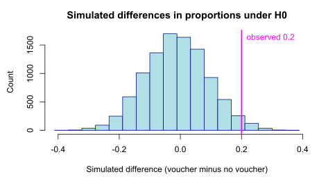
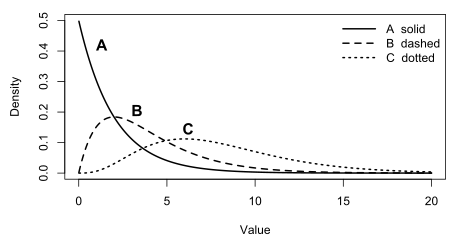
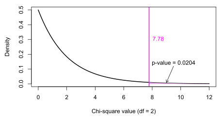

Questions
Download the question paper (PDF)
Try each question on paper first.
Question 1. Shuttle bus use: one proportion and the direction of the test
A university transport office says that more than 35% of its students use the campus shuttle bus at least once a week. In a random sample of 400 students, 152 said that they use the shuttle bus at least once a week.
n <- 400
yes <- 152
p0 <- 0.35
(phat <- yes / n)
(se_p0 <- sqrt(p0 * (1 - p0) / n))
(z <- (phat - p0) / se_p0)
pnorm(z)
pnorm(z, lower.tail = FALSE)
2 * pnorm(z, lower.tail = FALSE)R output
[1] 0.38
[1] 0.02384848
[1] 1.257942
[1] 0.8957936
[1] 0.1042064
[1] 0.2084128(a) Define $p$. (b) Hypotheses. (c) Success-failure check. (d) Confirm se_p0 and z. (e) Match the last three lines to $H_A\colon p\lt 0.35$, $H_A\colon p\gt 0.35$, $H_A\colon p\neq 0.35$. (f) Decision and conclusion at 5%.
(a) The parameter
$p$ is the true proportion of all students at this university who use the campus shuttle bus at least once a week. The value 152/400 describes only the sample, so it is the statistic $\hat p$, not $p$.
(b) Hypotheses
The claim says "more than 35%", so the alternative points to the right:
$$H_0\colon p = 0.35 \qquad H_A\colon p \gt 0.35$$The null hypothesis always has the equals sign. The claim goes into $H_A$.
(c) Success-failure condition
A hypothesis test is worked out as if $H_0$ is true, so the check uses the null value $p_0 = 0.35$, not $\hat p$:
$$np_0 = 400 \times 0.35 = 140 \ge 10$$ $$n(1-p_0) = 400 \times 0.65 = 260 \ge 10$$Both expected counts are at least 10. The students were chosen at random, so their answers are independent. The normal model can be used.
(d) Standard error and test statistic by hand
The sample proportion is $\hat p = \dfrac{152}{400} = 0.38$ (output line 1). The standard error uses $p_0$, for the same reason as in part (c):
$$SE = \sqrt{\frac{p_0(1-p_0)}{n}}$$ $$= \sqrt{\frac{0.35 \times 0.65}{400}}$$ $$= \sqrt{0.00056875}$$ $$= 0.0238$$ $$z = \frac{\hat p - p_0}{SE} = \frac{0.38 - 0.35}{0.023848} = 1.2579$$These match output lines 2 and 3 (0.02384848 and 1.257942).
(e) Which output line goes with which alternative
pnorm(z)gives 0.8958, the area to the left of 1.2579. This is the p-value for $H_A\colon p \lt 0.35$. It is large because the sample (0.38) lies on the opposite side of 0.35 from that alternative.pnorm(z, lower.tail = FALSE)gives 0.1042, the area to the right of 1.2579. This is the p-value for $H_A\colon p \gt 0.35$, the office's claim.2 * pnorm(z, lower.tail = FALSE)gives 0.2084, both tails added. This is the p-value for $H_A\colon p \neq 0.35$.
(f) Decision and conclusion
The p-value for this test is 0.1042. Because $0.1042 \gt 0.05$: do not reject $H_0$. There is not sufficient evidence that more than 35% of the students use the campus shuttle bus at least once a week.
This does not prove that $p = 0.35$. The sample proportion 0.38 is above 0.35, but a difference this size happens often enough by chance (about 10% of samples) when $p = 0.35$.
Question 2. SMS reminders and on-time homework: confidence interval for a difference in proportions
A mathematics department randomly assigned 430 first-year students to two groups. Group 1 (220 students) received a weekly SMS reminder about homework deadlines; group 2 (210 students) did not. 154 students in group 1 and 126 in group 2 submitted all homework on time. $p_1$ and $p_2$ are the true on-time proportions with and without the reminder. The code had three blanks:
n1 <- 220
yes1 <- 154
n2 <- 210
yes2 <- 126
(p1hat <- yes1 / n1)
(p2hat <- yes2 / n2)
(diff_p <- p1hat - p2hat)
alpha <- 0.05
(se <- sqrt(p1hat * (1 - p1hat) / n1 + ______(A)______))
(zvalue <- qnorm(______(B)______))
(lower <- diff_p - zvalue * se)
(upper <- ______(C)______)R output
[1] 0.7
[1] 0.6
[1] 0.1
[1] 0.04579741
[1] 1.959964
[1] 0.01023873
[1] 0.1897613(a) Parameter and point estimate. (b) Conditions. (c) Blanks A, B, C. (d) SE and 95% interval by hand. (e) Interpret. (f) Change to a 90% interval, using qnorm(0.95) = 1.644854.
(a) Parameter and point estimate
The parameter is $p_1 - p_2$: the difference between the true proportion of students who submit all homework on time with the SMS reminder and the true proportion without it.
The point estimate (statistic) is $\hat p_1 - \hat p_2$:
$$\hat p_1 = \frac{154}{220} = 0.7$$ $$\hat p_2 = \frac{126}{210} = 0.6$$ $$\hat p_1 - \hat p_2 = 0.7 - 0.6 = 0.1$$These are output lines 1 to 3.
(b) Conditions for the normal model
- Independence within and between the groups. The students were randomly assigned to the groups, and each student is in only one group, so the outcomes are independent.
- Success-failure condition. A confidence interval does not assume any null value, so the check uses the observed counts:
- Group 1: 154 successes (on time) and $220 - 154 = 66$ failures.
- Group 2: 126 successes and $210 - 126 = 84$ failures.
Both conditions hold, so $\hat p_1 - \hat p_2$ is close to normally distributed.
(c) Missing code
- (A)
p2hat * (1 - p2hat) / n2. This is the second term of the unpooled standard error. - (B)
1 - alpha / 2. For 95% confidence, 2.5% is left in each tail, so the critical value is the 97.5th percentile,qnorm(0.975)= 1.959964 (output line 5). - (C)
diff_p + zvalue * se. The upper limit adds the margin of error.
(d) Standard error and 95% interval by hand
For a confidence interval, use the unpooled standard error from the formula sheet:
$$SE(\hat p_1-\hat p_2)=\sqrt{\frac{0.7(1-0.7)}{220}+\frac{0.6(1-0.6)}{210}}$$ $$= \sqrt{0.00095455 + 0.00114286}$$ $$= \sqrt{0.00209740}$$ $$= 0.0458$$Margin of error: $1.96 \times 0.045797 = 0.0898$.
$$0.1 \pm 0.0898 \quad\Longrightarrow\quad (0.0102,\ 0.1898)$$R gives (0.01023873, 0.1897613). The fourth decimal agrees; the tiny difference comes from R using $z^\star = 1.959964$ instead of 1.96.
(e) Interpretation
With 95% confidence, the true proportion of students who submit all homework on time is between 0.0102 and 0.1898 higher with the SMS reminder than without it (between about 1 and 19 percentage points higher).
The whole interval is above 0, so the data point to a higher on-time proportion with the reminder.
(f) A 90% interval
Change alpha <- 0.05 to alpha <- 0.10. Then qnorm(1 - alpha / 2) becomes qnorm(0.95) = 1.644854. Nothing else changes, because the estimate and the standard error do not depend on the confidence level.
The 90% interval is narrower than the 95% interval. A lower confidence level uses a smaller critical value (1.645 instead of 1.96), so the margin of error is smaller. The price is less confidence that the interval contains $p_1 - p_2$.
Question 3. Breakfast habits: pooled z test for a zero difference
Independent random samples: 117 of 180 residence students and 132 of 240 day students eat breakfast on most weekdays. The team claims that residence students are more likely to eat breakfast. $p_1$: residence students, $p_2$: day students.
yes1 <- 117
n1 <- 180
yes2 <- 132
n2 <- 240
(p1hat <- yes1 / n1)
(p2hat <- yes2 / n2)
(pooled <- (yes1 + yes2) / (n1 + n2))
(se_pool <- sqrt(pooled * (1 - pooled) * (1 / n1 + 1 / n2)))
(z <- ((p1hat - p2hat) - 0) / se_pool)
pnorm(z)
pnorm(z, lower.tail = FALSE)
2 * pnorm(z, lower.tail = FALSE)R output
[1] 0.65
[1] 0.55
[1] 0.5928571
[1] 0.04844302
[1] 2.064281
[1] 0.9805045
[1] 0.01949555
[1] 0.03899109(a) Hypotheses. (b) Why pooled. (c) Show $\hat p_{\text{pool}} = 0.5929$. (d) Conditions. (e) Confirm SE and $z$. (f) Which line is the p-value. (g) Multiple choice. (h) Causation?
Options for (g): A. Reject $H_0$; sufficient evidence that the proportion of residence students who eat breakfast is higher than that of day students. B. Reject $H_0$; the data prove that living in residence causes students to eat breakfast. C. Do not reject $H_0$; not sufficient evidence. D. Reject $H_0$; sufficient evidence that $\hat p_1 \gt \hat p_2$.
(a) Hypotheses
$$H_0\colon p_1 - p_2 = 0 \qquad H_A\colon p_1 - p_2 \gt 0$$"Residence students are more likely" means $p_1 \gt p_2$, which is the same as $p_1 - p_2 \gt 0$.
(b) Why a pooled proportion
The test is worked out as if $H_0$ is true. Here $H_0$ says $p_1 = p_2$, so both groups share one common proportion. One common proportion is estimated from both samples together: that estimate is the pooled proportion. The pooled standard error is used only when the null value of the difference is 0.
(c) The pooled proportion
$$\hat p_{\text{pool}}=\frac{\hat p_1 n_1+\hat p_2 n_2}{n_1+n_2}$$ $$= \frac{0.65 \times 180 + 0.55 \times 240}{180 + 240}$$ $$= \frac{117 + 132}{420}$$ $$= \frac{249}{420}$$ $$= 0.5929$$$\hat p_1 n_1$ is the number of successes in sample 1 (117), which is why the R code writes (yes1 + yes2) / (n1 + n2). Output line 3 shows 0.5928571.
(d) Conditions
- Independence: two independent random samples, so the students' answers are independent within and between the groups.
- Success-failure with the pooled proportion (because the test assumes $H_0$): $$n_1\hat p_{\text{pool}} = 180 \times \frac{249}{420} = 106.71$$ $$n_1(1-\hat p_{\text{pool}}) = 180 \times \frac{171}{420} = 73.29$$ $$n_2\hat p_{\text{pool}} = 240 \times \frac{249}{420} = 142.29$$ $$n_2(1-\hat p_{\text{pool}}) = 240 \times \frac{171}{420} = 97.71$$ All four are at least 10. (The exact fraction $\frac{249}{420}$ is used here; with the rounded 0.5929 the products differ only in the second decimal.)
The normal model can be used.
(e) Standard error and test statistic by hand
$$SE(\hat p_{\text{pool}})=\sqrt{0.5929(1-0.5929)\left(\frac{1}{180}+\frac{1}{240}\right)}$$ $$= \sqrt{0.241378 \times 0.009722}$$ $$= \sqrt{0.0023467}$$ $$= 0.0484$$ $$z = \frac{(\hat p_1 - \hat p_2) - 0}{SE}$$ $$= \frac{0.65 - 0.55}{0.048443}$$ $$= 2.0643$$These match output lines 4 and 5 (0.04844302 and 2.064281).
(f) The p-value
$H_A$ says "greater than", so the p-value is the area to the right of $z = 2.0643$: pnorm(z, lower.tail = FALSE) = 0.0195 (output line 7).
- 0.9805 (
pnorm(z)) is the left-tail area, used for $H_A\colon p_1 - p_2 \lt 0$. - 0.0390 (two times the right tail) is used for $H_A\colon p_1 - p_2 \neq 0$.
(g) Decision and conclusion: option A
$0.0195 \lt 0.05$, so reject $H_0$. A is correct: there is sufficient evidence that the proportion of residence students who eat breakfast on most weekdays is higher than that of day students.
- B is wrong: a test never proves anything, and these are observational samples, so they cannot show cause.
- C has the wrong decision: the p-value is smaller than 0.05.
- D is about the sample proportions. It is already known that $\hat p_1 = 0.65 \gt \hat p_2 = 0.55$; the test is about the population proportions $p_1$ and $p_2$.
(h) Causation
No. The students were sampled, not randomly assigned to live in residence. Residence students and day students can differ in other ways that affect breakfast, for example access to a dining hall or the time spent travelling to campus. The data show an association between where students live and eating breakfast, not that living in residence causes it.
Question 4. Correcting R code: testing a non-zero difference
SMS data from Question 2 (154 of 220 versus 126 of 210 on time). Claim: the reminder raises the on-time proportion by exactly 15 percentage points; two-sided alternative. The tutor's code (objects from Question 2 already exist):
p0 <- 0.15
(pooled <- (yes1 + yes2) / (n1 + n2))
(se_pool <- sqrt(pooled * (1 - pooled) * (1 / n1 + 1 / n2)))
(z <- (diff_p - p0) / se_pool)
(pvalue <- pnorm(z, lower.tail = FALSE))R output
[1] 0.6511628
[1] 0.04598005
[1] -1.087428
[1] 0.8615762(a) Hypotheses. (b) Two mistakes. (c) Corrected code. (d) $z$ by hand and p-value, using pnorm(1.0918, lower.tail = FALSE) = 0.1374605. (e) Decision. (f) Link with the 95% interval from Question 2.
(a) Hypotheses
$$H_0\colon p_1 - p_2 = 0.15 \qquad H_A\colon p_1 - p_2 \neq 0.15$$(b) The two mistakes
- The standard error is pooled. Pooling is correct only when $H_0$ says $p_1 - p_2 = 0$, because then the two groups share one proportion. Here $H_0$ says the proportions differ by 0.15, so there is no common proportion to estimate. The test must use the unpooled standard error $SE(\hat p_1 - \hat p_2)$, the same one as in the confidence interval.
- The p-value uses only the right tail. $H_A$ is two-sided, so use both tails:
2 * pnorm(z)for a negative $z$. Here $z = -1.09$, sopnorm(z, lower.tail = FALSE)gives the large area to the right of $-1.09$ (0.8616), which is not a p-value for this test.
(c) Corrected code
p0 <- 0.15
(se <- sqrt(p1hat * (1 - p1hat) / n1 + p2hat * (1 - p2hat) / n2))
(z <- (diff_p - p0) / se)
(pvalue <- 2 * pnorm(z))R output
[1] 0.04579741
[1] -1.091765
[1] 0.2749365(2 * pnorm(abs(z), lower.tail = FALSE) gives the same value and works for either sign of $z$.)
(d) Test statistic and p-value by hand
From Question 2, $\hat p_1 - \hat p_2 = 0.1$ and $SE = 0.045797$.
$$z = \frac{(\hat p_1 - \hat p_2) - 0.15}{SE}$$ $$= \frac{0.1 - 0.15}{0.045797}$$ $$= -1.0918$$The normal curve is symmetric, so the area to the left of $-1.0918$ equals the area to the right of $+1.0918$, which R gives as 0.1374605. Two tails:
$$\text{p-value} = 2 \times 0.1374605 = 0.2749$$This agrees with the corrected R output (0.2749365).
(e) Decision and conclusion
$0.2749 \gt 0.05$: do not reject $H_0$. There is not sufficient evidence that the difference between the on-time proportions (reminder minus no reminder) is different from 0.15. The data are consistent with the department head's claim; they do not prove it.
(f) The same decision from the confidence interval
The 95% interval from Question 2 is $(0.0102,\ 0.1898)$. The null value 0.15 lies inside it, so 0.15 is a plausible value of $p_1 - p_2$. A two-sided test at the 5% level therefore does not reject $H_0\colon p_1 - p_2 = 0.15$. Both methods use the same unpooled standard error, which is why they agree.
Question 5. Peer mentoring: bootstrap percentile confidence interval
Students chose whether to join a mentoring pilot. 45 of 60 who joined passed their first test; 30 of 50 who did not join passed. $p_1$: joiners, $p_2$: non-joiners.
n1 <- 60
yes1 <- 45
no1 <- n1 - yes1
n2 <- 50
yes2 <- 30
no2 <- n2 - yes2
outcomes_m <- c(rep(c(1, 0), c(yes1, no1)))
outcomes_n <- c(rep(c(1, 0), c(yes2, no2)))
nsim <- 10000
set.seed(122)
sim_m <- matrix(NA, nrow = n1, ncol = nsim)
sim_n <- matrix(NA, nrow = n2, ncol = nsim)
for(i in 1:nsim){
sim_m[,i] = sample(outcomes_m, n1, replace = ____(A)____)
sim_n[,i] = sample(outcomes_n, n2, replace = ____(A)____)
}
sim_diff <- apply(sim_m, 2, mean) - apply(sim_n, 2, mean)
alpha <- 0.10
(lower <- quantile(sim_diff, ____(B)____))
(upper <- quantile(sim_diff, ____(C)____))R output
5%
0.003333333
95%
0.2966667 (a) Describe outcomes_m. (b) Blank A. (c) Blanks B, C and the confidence level. (d) A column of sim_m; a value of sim_diff. (e) State and interpret the interval. (f) Compare with the mathematical-model interval (0.0036, 0.2964); another seed? (g) "Mentoring causes higher pass rates."
(a) The vector outcomes_m
rep(c(1, 0), c(45, 15)) repeats 1 forty-five times and 0 fifteen times. So outcomes_m holds 60 values, one per mentored student: 1 = passed the first test and 0 = did not pass. Its mean is $\frac{45}{60} = 0.75 = \hat p_1$.
(b) Blank (A): TRUE
A bootstrap resample takes 60 students from the original 60 with replacement: some students are picked more than once and some not at all. This copies the idea of drawing a new sample from the population, so the resampled proportions vary the way sample proportions vary. With replace = FALSE, every resample would contain the same 45 ones and 15 zeros, every proportion would be 0.75, and there would be no variability to measure.
(c) Blanks (B) and (C)
- (B)
alpha / 2, which is 0.05: the 5th percentile. - (C)
1 - alpha / 2, which is 0.95: the 95th percentile.
The middle 90% of the bootstrap differences lie between these percentiles, so this is a 90% bootstrap percentile interval. The output labels 5% and 95% are the percentile names that quantile prints.
(d) What the simulated objects represent
- One column of
sim_mis one bootstrap resample of 60 mentored students (60 ones and zeros).apply(sim_m, 2, mean)turns each column into one bootstrap pass proportion $\hat p_1^{*}$. - One value of
sim_diffis one bootstrap difference $\hat p_1^{*} - \hat p_2^{*}$, from one resample of each group. There are 10 000 such differences.
(e) The interval and its meaning
Rounded to 4 decimals, the 90% bootstrap percentile interval is $(0.0033,\ 0.2967)$.
With 90% confidence, the true pass proportion of students who join mentoring is between 0.0033 and 0.2967 higher than that of students who do not join (about 0.3 to 29.7 percentage points higher). The value 0 lies just outside the interval, so at the 10% level the data suggest a higher pass proportion among students who join.
(f) Comparison with the mathematical model
The mathematical model: $\hat p_1 - \hat p_2 = 0.75 - 0.60 = 0.15$ and
$$SE = \sqrt{\frac{0.75(0.25)}{60}+\frac{0.6(0.4)}{50}}$$ $$= \sqrt{0.003125 + 0.0048}$$ $$= 0.0890$$ $$0.15 \pm 1.645(0.0890) = (0.0036,\ 0.2964)$$Its conditions hold (the counts 45, 15, 30 and 20 are all at least 10). The two intervals are almost the same: both are centred near 0.15 and have nearly the same width, and both only just exclude 0.
With a different seed, the bootstrap limits would change slightly, because the resamples are random. set.seed(122) fixes the random numbers so that the same output appears each time the code is run. The mathematical-model interval has no randomness, so it never changes.
(g) "Mentoring causes higher pass rates"
This claim is not justified. Students chose for themselves whether to join, so this is an observational study. Students who join may differ from those who do not, for example in motivation, and that could explain part of the difference. The interval shows an association between joining and passing, not cause. The lower limit (0.0033) is also close to 0, so the evidence for a difference is weak.
Question 6. Data vouchers and survey completion: randomisation test
90 students were randomly assigned to two groups of 45. Group 1 was offered a free mobile data voucher for completing a course evaluation survey; 30 completed it. In group 2 (no voucher), 21 completed it. Does the voucher increase the completion proportion? $p_1$: with voucher, $p_2$: without.
n1 <- 45
yes1 <- 30
n2 <- 45
yes2 <- 21
(diff_p <- yes1 / n1 - yes2 / n2)
outcomes <- c(rep(c(1, 0), c(yes1 + yes2, n1 + n2 - yes1 - yes2)))
nsim <- 10000
set.seed(35)
sim <- matrix(NA, nrow = n1 + n2, ncol = nsim)
for(i in 1:nsim){
sim[,i] = sample(outcomes, n1 + n2, replace = FALSE)
}
sim_diff <- apply(sim[1:n1,], 2, mean) -
apply(sim[(n1+1):(n1+n2),], 2, mean)
(pvalue <- sum(sim_diff >= diff_p) / nsim)R output
[1] 0.2
[1] 0.0422
sim_diff. The vertical line marks the observed difference 0.2.(a) Hypotheses. (b) The vector outcomes. (c) replace = FALSE here versus TRUE in Question 5. (d) Rows of a column of sim. (e) Meaning of 0.0422. (f) Decision; may "causes" be used? (g) Code for $H_A\colon p_1 - p_2 \lt 0$. (h) Centre of the histogram.
(a) Hypotheses
$$H_0\colon p_1 - p_2 = 0 \ \text{(the voucher has no effect)}$$ $$H_A\colon p_1 - p_2 \gt 0 \ \text{(the voucher increases completion)}$$(b) The vector outcomes
outcomes holds 90 values: $30 + 21 = 51$ ones (completed the survey) and $90 - 51 = 39$ zeros (did not complete). The group labels are dropped.
If $H_0$ is true, the voucher makes no difference, so each student would have given the same outcome in either group. The group labels then carry no information, and the 90 outcomes can be dealt out again into two new groups of 45. Doing this many times shows what differences happen by chance alone.
(c) replace = FALSE here, replace = TRUE in Question 5
- Randomisation test (here): the code copies the random assignment. Each of the 90 actual students is placed in exactly one group, so each outcome is used exactly once: sampling without replacement, which is a shuffle. Every simulated split still has 51 completions in total.
- Bootstrap (Question 5): the code copies drawing new samples from the population, without assuming $H_0$. Drawing with replacement lets the proportions vary from resample to resample.
(d) Rows of one column of sim
Each column is one shuffle of the 90 outcomes. Rows 1:n1 (rows 1 to 45) form the simulated voucher group; rows (n1+1):(n1+n2) (rows 46 to 90) form the simulated no-voucher group. sim_diff holds the difference in their completion proportions for each shuffle.
(e) What 0.0422 measures
sum(sim_diff >= diff_p) / nsim counts the simulated differences that are 0.2 or larger and divides by 10 000. So 422 of the 10 000 shuffles gave a difference of at least 0.2: these are the bars on and to the right of the vertical line.
In words: if the voucher had no effect, random assignment alone would give a difference of 0.2 or more in about 4.2% of repetitions. This is the p-value.
(f) Decision, conclusion and cause
$0.0422 \lt 0.05$: reject $H_0$. There is sufficient evidence that offering the data voucher increases the proportion of students who complete the course evaluation survey.
The word "causes" may be used here, because the students were randomly assigned to the groups. Random assignment makes the groups alike in other ways, so the voucher is the only planned difference between them. The result applies to students like those in the study.
(g) Code for $H_A\colon p_1 - p_2 \lt 0$
(pvalue <- sum(sim_diff <= diff_p) / nsim)For a "less than" alternative, the p-value counts simulated differences at or below the observed difference.
(h) The centre of the histogram
The histogram is centred near 0. Every shuffle puts the outcomes into the two groups at random, so neither simulated group is favoured. The simulated differences therefore vary around 0, which is the value stated in $H_0$. The observed 0.2 lies far out in the right tail, which is why the p-value is small.
Question 7. The chi-square distribution: shape, probabilities and percentiles

pchisq(6.2, df = 3) # line 1
pchisq(6.2, df = 3, lower.tail = FALSE) # line 2
qchisq(0.95, df = 6) # line 3
qchisq(0.05, df = 6) # line 4
pchisq(8, df = 4) - pchisq(2, df = 4) # line 5
qchisq(0.90, df = 2) # line 6R output
[1] 0.897725
[1] 0.102275
[1] 12.59159
[1] 1.635383
[1] 0.6441807
[1] 4.60517(a) Match curves to df. (b) Mean and variance for df 8. (c) Probability statements for lines 1, 2, 5. (d) Critical value for $\alpha = 0.05$, df 6. (e) Missing argument in qchisq(0.05, df = 6, ____). (f) Meaning of 4.60517. (g) True or false: (i) a chi-square statistic can be negative; (ii) the p-value of a test of independence is an upper-tail area.
(a) Matching the curves
The mean of a chi-square distribution equals its degrees of freedom $k$. A larger $k$ moves the centre to the right and spreads the curve out, and the curve becomes less skewed.
- A: df = 2 (highest at 0 and falling, centre near 2).
- B: df = 4 (peak near 2, centre near 4).
- C: df = 8 (peak near 6, centre near 8, widest spread).
(b) Mean and variance for 8 degrees of freedom
$$\mu = k = 8 \qquad \sigma^2 = 2k = 16$$(c) Probability statements
- Line 1: $P(X^2 \le 6.2) = 0.8977$ for $X^2 \sim \chi^2(3)$.
pchisqgives the area to the left. - Line 2: $P(X^2 \gt 6.2) = 0.1023$ for $X^2 \sim \chi^2(3)$. Check: $0.897725 + 0.102275 = 1$.
- Line 5: $P(2 \le X^2 \le 8) = 0.6442$ for $X^2 \sim \chi^2(4)$: the area left of 8 minus the area left of 2.
(d) The critical value
Line 3: 12.5916. It cuts off 5% in the right tail, $P(X^2 \ge 12.5916) = 0.05$, so $H_0$ is rejected when $X^2 \ge 12.5916$.
Line 4 (1.6354) cuts off 5% in the left tail. A small $X^2$ means the observed counts are close to the expected counts, which agrees with $H_0$. The chi-square test rejects only for large values, so line 4 is not a critical value.
(e) The missing argument
qchisq(0.05, df = 6, lower.tail = FALSE) gives 12.59159: the value with 5% above it is the same as the 95th percentile.
(f) The value 4.60517
4.60517 is the 90th percentile of the chi-square distribution with 2 degrees of freedom: $P(X^2 \le 4.60517) = 0.90$, so 10% of the area lies above it. It is also the critical value of a test with $df = 2$ at the 10% level.
(g) True or false
- False. $X^2$ adds terms $\frac{(O-E)^2}{E}$. Each square is 0 or positive and each expected count is positive, so $X^2 \ge 0$.
- True. Differences between observed and expected counts in either direction are squared, so every kind of difference makes $X^2$ larger. Only large values are evidence against independence, so the p-value is always the area to the right of the observed $X^2$.
Question 8. Study space and year of study: chi-square test by hand
A random sample of 300 students was asked where they usually study.
| Observed | Library | Own room | Other | Total |
|---|---|---|---|---|
| First-year | 58 | 70 | 32 | 160 |
| Senior | 32 | 82 | 26 | 140 |
| Total | 90 | 152 | 58 | 300 |
| Expected (given) | Library | Own room | Other |
|---|---|---|---|
| First-year | 48 | ____ | 30.9333 |
| Senior | ____ | 70.9333 | ____ |
(a) Hypotheses. (b) Missing expected counts. (c) Conditions. (d) The test statistic with each contribution. (e) df. (f) Choose from pchisq(7.78, df = 1) = 0.9947172, pchisq(7.78, df = 2) = 0.9795547, pchisq(7.78, df = 6) = 0.7453317 and find the p-value. (g) Multiple choice. (h) The largest contributions and the pattern.
Options for (g): A. Reject $H_0$; sufficient evidence that year of study and usual study space are associated (dependent). B. Reject $H_0$; being a senior causes students to study in their own room. C. Do not reject $H_0$; they have been proved independent. D. Do not reject $H_0$; not sufficient evidence of an association.
(a) Hypotheses
$H_0$: year of study and usual study space are independent (not associated).
$H_A$: year of study and usual study space are dependent (associated).
(b) Missing expected counts
$$E_{ij}=\frac{(\text{row } i \text{ total})\times(\text{column } j \text{ total})}{\text{table total}}$$- First-year, Own room: $\dfrac{160 \times 152}{300} = 81.0667$
- Senior, Library: $\dfrac{140 \times 90}{300} = 42$
- Senior, Other: $\dfrac{140 \times 58}{300} = 27.0667$
Check: each row of expected counts adds to its row total, for example $48 + 81.0667 + 30.9333 = 160$.
(c) Conditions
- Independence: a random sample, and each student is counted in exactly one cell.
- Expected counts at least 5 in every cell: the smallest expected count is 27.0667, so this holds.
(d) The test statistic
| Cell | $O$ | $E$ | $\frac{(O-E)^2}{E}$ |
|---|---|---|---|
| First-year, Library | 58 | 48 | $\frac{100}{48} = 2.0833$ |
| First-year, Own room | 70 | 81.0667 | $\frac{122.4711}{81.0667} = 1.5107$ |
| First-year, Other | 32 | 30.9333 | $\frac{1.1378}{30.9333} = 0.0368$ |
| Senior, Library | 32 | 42 | $\frac{100}{42} = 2.3810$ |
| Senior, Own room | 82 | 70.9333 | $\frac{122.4711}{70.9333} = 1.7266$ |
| Senior, Other | 26 | 27.0667 | $\frac{1.1378}{27.0667} = 0.0420$ |
R's chisq.test gives the same value, X-squared = 7.7804.
(e) Degrees of freedom
$$df = (R-1)\times(C-1) = (2-1)\times(3-1) = 2$$(f) The p-value
Use the line with df = 2. pchisq gives the area to the left, $P(X^2 \le 7.78) = 0.9795547$. The p-value is the area to the right:

(g) Decision and conclusion: option A
$0.0204 \lt 0.05$, so reject $H_0$. A is correct.
- B claims cause; a survey shows association only.
- C has the wrong decision, and a test never proves independence.
- D has the wrong decision: the p-value is below 0.05.
(h) The largest contributions
The two Library cells (2.3810 and 2.0833) and then the two Own room cells (1.7266 and 1.5107) add the most. Compared with what independence predicts:
- more first-years use the library (58 against 48 expected), and fewer seniors do (32 against 42);
- more seniors study in their own room (82 against 70.93), and fewer first-years do (70 against 81.07).
The "Other" cells are close to their expected counts and add almost nothing.
Question 9. Payment method on three campuses: chisq.test and a randomisation test
At food courts on three campuses, 300 student customers were selected at random and their payment method was recorded. Does payment method depend on the campus?
ct <- as.table(rbind(c(30, 60, 60),
c(27, 38, 25),
c(18, 26, 16)))
dimnames(ct) <- list(Campus = c("Hatfield", "Groenkloof", "Prinshof"),
Payment = c("Cash", "Card", "App"))
(result <- chisq.test(ct))
result$expectedR output
Pearson's Chi-squared test
data: ct
X-squared = 6.7272, df = 4, p-value = 0.151
Payment
Campus Cash Card App
Hatfield 37.5 62.0 50.5
Groenkloof 22.5 37.2 30.3
Prinshof 15.0 24.8 20.2campus <- rep(c("Hatfield", "Groenkloof", "Prinshof"), times = rowSums(ct))
payment <- rep(rep(c("Cash", "Card", "App"), 3),
times = c(30, 60, 60, 27, 38, 25, 18, 26, 16))
(obs_stat <- chisq.test(table(campus, payment))$statistic)
nsim <- 5000
set.seed(18)
sim_stat <- rep(NA, nsim)
for(i in 1:nsim){
shuffled <- sample(payment, length(payment), replace = FALSE)
sim_stat[i] <- chisq.test(table(campus, shuffled))$statistic
}
(pvalue <- sum(sim_stat ____ obs_stat) / nsim)R output
X-squared
6.727244
[1] 0.148(a) Hypotheses. (b) Confirm the Hatfield–Cash expected count and df. (c) Conditions. (d) Code for observed counts only and the statistic only. (e) Decision. (f) One pass of the loop. (g) The blank. (h) Multiple choice on the p-value 0.151. (i) Why 0.148 and 0.151 agree.
Options for (h): A. There is a 15.1% chance that campus and payment method are independent. B. If campus and payment method were independent, a chi-square statistic of 6.7272 or larger would happen in about 15.1% of random samples like this one. C. 15.1% of the customers pay in a way that depends on their campus. D. The test proves that campus and payment method are independent.
(a) Hypotheses
$H_0$: campus and payment method are independent.
$H_A$: campus and payment method are dependent (payment method depends on the campus).
(b) One expected count and the degrees of freedom
Hatfield row total: $30 + 60 + 60 = 150$. Cash column total: $30 + 27 + 18 = 75$. Table total: 300.
$$E = \frac{150 \times 75}{300} = 37.5$$This matches result$expected. The table has 3 rows and 3 columns:
which matches df = 4 in the output.
(c) Conditions
- Independence: customers were selected at random and each customer appears once.
- Expected counts at least 5: the smallest value in
result$expectedis 15.0 (Prinshof, Cash). Every cell has at least 5. (R prints the warning "Chi-squared approximation may be incorrect" when expected counts are small; no warning appears here.)
(d) Printing parts of the result
- Observed counts only:
result$observed - Test statistic only:
result$statistic
result is a list, and $ picks one part of it, in the same way as result$expected and result$p.value.
(e) Decision and conclusion
From the output: $X^2 = 6.7272$, $df = 4$, p-value $= 0.151$. Because $0.151 \gt 0.05$: do not reject $H_0$. There is not sufficient evidence that payment method depends on the campus. This does not prove that they are independent.
(f) One pass of the loop
sample(payment, length(payment), replace = FALSE)shuffles the 300 payment labels among the 300 customers. Each label is used once, so the totals stay 75 Cash, 124 Card and 101 App. The campus labels stay where they are, so the campus totals do not change either.table(campus, shuffled)builds a new two-way table, andchisq.test(...)$statisticcomputes its $X^2$.- That value is stored in
sim_stat[i].
Under $H_0$, campus tells nothing about payment method, so any way of pairing the payment labels with the campuses is as likely as the pairing that was observed. Shuffling therefore produces tables that could happen when $H_0$ is true, and the 5000 values in sim_stat show how large $X^2$ gets by chance alone.
The first output line, 6.727244, is the observed $X^2$. It equals the value from chisq.test(ct). (table() puts the categories in alphabetical order, but the order of rows and columns does not change $X^2$.)
(g) The blank: >=
(pvalue <- sum(sim_stat >= obs_stat) / nsim)Only large values of $X^2$ are evidence against independence, because $X^2$ squares the differences between observed and expected counts. So the p-value counts the simulated statistics that are at least as large as the observed one: the right tail only. Here $0.148 \times 5000 = 740$ of the shuffled tables gave $X^2 \ge 6.7272$.
(h) Meaning of the p-value: option B
- B is correct: the p-value is the probability of a statistic this large or larger, assuming $H_0$ is true.
- A is wrong: a p-value is not the probability that $H_0$ is true.
- C reads the p-value as a proportion of customers, which it is not.
- D is wrong: not rejecting $H_0$ never proves it.
(i) Why 0.148 and 0.151 are close
Both p-values measure the same thing: the chance of $X^2 \ge 6.7272$ when campus and payment method are independent. The randomisation test finds it by simulation; chisq.test uses the chi-square distribution with 4 degrees of freedom. When the conditions hold (here every expected count is at least 15), the chi-square distribution describes the simulated statistics well, so the answers agree. The small difference comes from the randomness of 5000 shuffles; another seed would give a slightly different simulated p-value.
Question 10. Breakfast data as a 2 by 2 table: matching R to a hand calculation
The breakfast data from Question 3 in a two-way table:
bt <- as.table(rbind(c(117, 63),
c(132, 108)))
dimnames(bt) <- list(Group = c("Residence", "Day"),
Breakfast = c("Yes", "No"))
chisq.test(bt)R output
Pearson's Chi-squared test with Yates' continuity correction
data: bt
X-squared = 3.857, df = 1, p-value = 0.04954A hand calculation gives 4.2613, not 3.857. (a) Expected counts and the hand value. (b) Why R differs. (c) Corrected code. (d) The corrected p-value 0.03899 and Question 3. (e) Which test answers the claim of Question 3?
(a) Expected counts and the hand value
Row totals: Residence 180, Day 240. Column totals: Yes $117 + 132 = 249$, No $63 + 108 = 171$. Table total: 420.
| Cell | $O$ | $E$ | $\frac{(O-E)^2}{E}$ |
|---|---|---|---|
| Residence, Yes | 117 | $\frac{180 \times 249}{420} = 106.7143$ | $\frac{105.7959}{106.7143} = 0.9914$ |
| Residence, No | 63 | $\frac{180 \times 171}{420} = 73.2857$ | $\frac{105.7959}{73.2857} = 1.4436$ |
| Day, Yes | 132 | $\frac{240 \times 249}{420} = 142.2857$ | $\frac{105.7959}{142.2857} = 0.7435$ |
| Day, No | 108 | $\frac{240 \times 171}{420} = 97.7143$ | $\frac{105.7959}{97.7143} = 1.0827$ |
In every cell $|O - E| = 10.2857$, so every numerator is $10.2857^2 = 105.7959$.
$$\chi^2 = 0.9914 + 1.4436 + 0.7435 + 1.0827 = 4.2612$$This is 4.2613 apart from rounding in the fourth decimal. The expected counts are the same numbers as $n_1\hat p_{\text{pool}}$, $n_1(1-\hat p_{\text{pool}})$, $n_2\hat p_{\text{pool}}$ and $n_2(1-\hat p_{\text{pool}})$ in Question 3(d).
(b) Why R's value is different
The first line of the output says "with Yates' continuity correction". For a $2\times 2$ table, chisq.test applies this correction by default: it makes each difference $|O-E|$ smaller by 0.5 before squaring. This lowers $X^2$ from 4.2613 to 3.857. The formula sheet's $\chi^2$ has no correction. (For larger tables, such as the $3\times 3$ table in Question 9, R makes no correction.)
(c) Corrected code
chisq.test(bt, correct = FALSE)R output
Pearson's Chi-squared test
data: bt
X-squared = 4.2613, df = 1, p-value = 0.03899(d) Comparing with Question 3
The corrected p-value 0.03899 equals the two-sided p-value of the pooled $z$ test, 2 * pnorm(z, lower.tail = FALSE) = 0.03899109. The statistics match as well: $z^2 = 2.064281^2 = 4.2613 = X^2$.
A chi-square test has no direction. It measures how far the counts are from independence in any direction, so for a $2\times 2$ table it tests $H_A\colon p_1 - p_2 \neq 0$.
(e) Which test fits the claim in Question 3
The team claimed that residence students are more likely to eat breakfast: a one-sided claim, $H_A\colon p_1 - p_2 \gt 0$. Only the pooled $z$ test with the upper-tail p-value (0.0195) tests this direction. The chi-square test can only say whether the proportions differ. Both reject $H_0$ at the 5% level here, but the $z$ test answers the team's question.